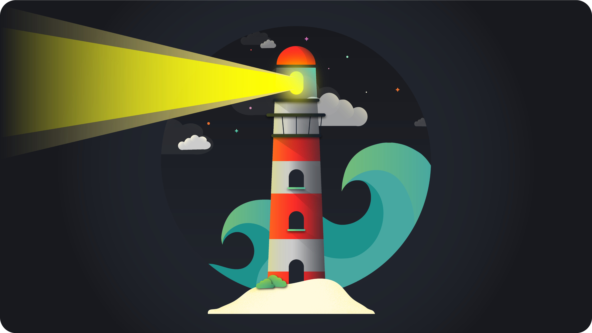

Designed in 2020
Lighthaus
Adaptive colour strategy for 32+ developer tools
Premium Theme in Apple's award winning app Bear
Designed in 2020
Lighthaus
Adaptive colour strategy for 32+ developer tools
Premium Theme in Apple's award winning app Bear
Overview
Lighthaus is a universal theme comprised of 20 colours that can be applied to various types of software used by developers to reduce eye fatigue and provide balanced contrast and structure between various elements on screen.
My Role
As a UI designer I did colour research, built the colour theme and guided the UI for all the various software during active development.
Reduce eye fatigue
To balance colours with the right kind of contrast ratio to reduce eye fatigue.
Add structure and delight
To create a visual hierarchy using colours and delight by moving developers away from standard white and black.
Adaptiver theme across Software
To create a colour system that could be adapted and applied to as many developer softwares as possible.

My Process
I started by understanding how syntax highlighting works in various different types of software used by developers to code with.I looked at several popular themes that already exist in the market and understood how they function and their USPs.

Based on the theme requirements, the number of colours were defined and the software that the colours would be adapted to were selected.

I thought of various ideas for the colour theme but the idea of a lighthaus stood out the most as it would be a positioned differently as compared to other themes and have a lot of calming yet bold hues.
Each colour was chosen keeping in mind WCAG guidelines and keeping a contrast ratio of 4.5:1. There were 2 sets of 8 colours made, one was the primary brighter colour, and the other was secondary and lighter shades of the primary colours. The colours were then adapted to 32+ softwares during active development.

Website & Wallpaper
A website, desktop and mobile wallpapers were also created for this theme.

Post Launch
Our theme was launched on reddit and has garnered over 25000+ views.

Other Projects